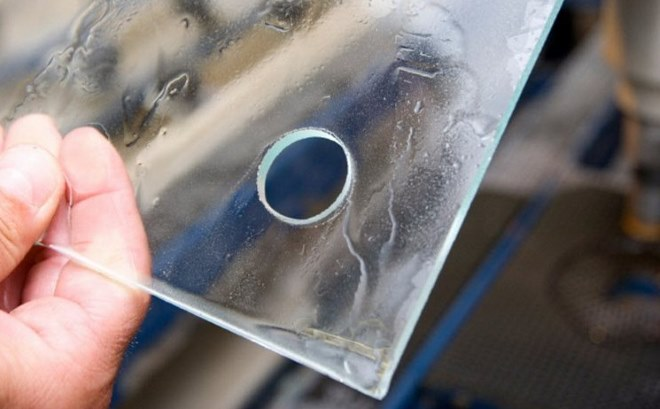

При необходимости создания ровного и аккуратного отверстия в стеклянной поверхности необязательно обращаться к опытным и квалифицированным специалистам, услуги которых достаточно дороги. Такую процедуру можно выполнить и своими руками в условиях домашней мастерской, но, конечно, для этого надо знать, как просверлить стекло, какие использовать инструменты, расходные материалы и оборудование.
Разбираемся в особенностях материала
Прежде чем задаваться вопросом о том, как просверлить стекло в домашних условиях, следует хотя бы в общих чертах познакомиться с характеристиками и особенностями этого материала.
Процесс производства стекла является достаточно сложным. Выполняют его на промышленных предприятиях, оснащенных специальным оборудованием. Основным этапом такого процесса является приготовление расплава, в состав которого входит несколько компонентов. Такой расплав для стекла подвергают резкому переохлаждению, при этом процесс кристаллизации не завершается полностью.
Чтобы приготовить расплав, смесь компонентов, входящих в состав будущего стекла, подвергают значительному нагреву – до 2500°. В зависимости от того, какую химическую основу имеет расплав, различают стекла:
- оксидной категории;
- сульфидные;
- фторидного типа.
Какие инструменты используют для сверления стекла
Чтобы сверление стекла не закончилось его растрескиванием и полным разрушением, очень важно знать не только как, но и чем правильно сверлить стекло. На современном рынке представлено множество инструментов, отдельные виды которых можно использовать для создания отверстий в стекле.
- Сверло, рабочая часть которого изготовлена из твердого сплава и имеет форму пера или копья, позволяет сделать отверстие в стекле диаметром 3–12 мм. Использование такого сверла требует определенных навыков. Однако даже их наличие и максимальная аккуратность при выполнении работ не помогут просверлить стекло этим инструментом без небольших сколов.
- Выполнить более качественное сверление отверстий позволяет алмазное сверло по стеклу, рабочая часть которого также имеет форму копья. Такой инструмент, на режущую часть которого нанесено алмазное напыление, обеспечивает более мягкое сверление.
- Сверла по стеклу, выполненные в виде трубки, применяются в тех случаях, когда в стекле требуется выполнить дырку большого диаметра. Более удобно использовать трубчатое сверло в комплекте со сверлильным станком.
Основные типы свёрел для стекла
Подготовка изделия
Задаваясь вопросом о том, как вырезать отверстие в стекле так, чтобы формируемая в нем дырочка была
максимально аккуратной,
а само стекло при этом не треснуло, важно знать, как правильно подготовить его к
обработке. Чтобы просверлить стекло своими руками, надо выполнить следующие подготовительные действия:
- Поверхность стекла, которое надо просверлить, обезжиривается при помощи спирта или скипидара. После этого ее необходимо протереть сухой тряпкой.
- Стеклянный лист или зеркало надо уложить на поверхность, которая исключит скольжение изделия в процессе обработки.
- Поверхность, на которую будет укладываться стеклянный лист или зеркало, должна быть больше самого обрабатываемого изделия. Нельзя допускать, чтобы края листа выступали за ее пределы.
- На то место, которое нужно просверлить, желательно наклеить малярный скотч или кусочек пластыря, чтобы исключить соскальзывание инструмента.
- Центр будущего отверстия обозначается при помощи обычного маркера.
- Если со сверлением стекла в домашних условиях вы знакомы только по видео, то для получения практических навыков лучше предварительно потренироваться на ненужных стеклянных осколках. Такая тренировка позволит вам впоследствии просверлить стекло качественно.
- Чтобы сделать края отверстия, которое вы просверлили, еще более аккуратными, можно дополнительно обработать их при помощи наждачной бумаги мелкой фракции.
Практические рекомендации
Как правильно просверлить стекло, чтобы получить в итоге качественный результат? Для решения такой задачи достаточно придерживаться следующих рекомендаций:
- Чтобы минимизировать риск образования трещин и расколов в месте выполнения сверления, стекло можно обработать медом и скипидаром.
- Давление, оказываемое на дрель сверху, должно быть минимальным.
- Сам процесс сверления необходимо выполнять по 5–10 секунд, после чего надо обязательно охлаждать инструмент в сосуде с водой.
- Дрелью нельзя покачивать из стороны в сторону.
- Расстояние центра отверстия от края обрабатываемого изделия должно составлять не менее 1,5 см.